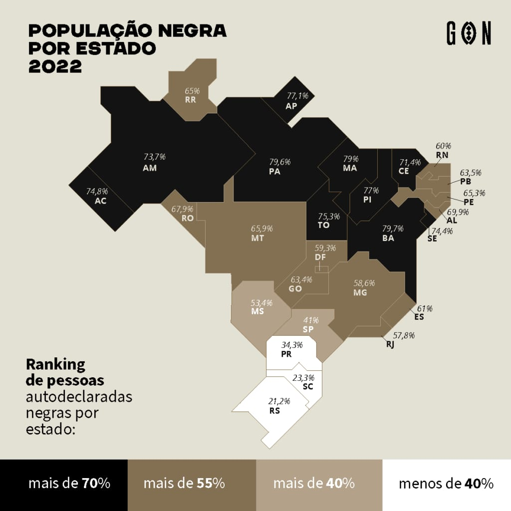
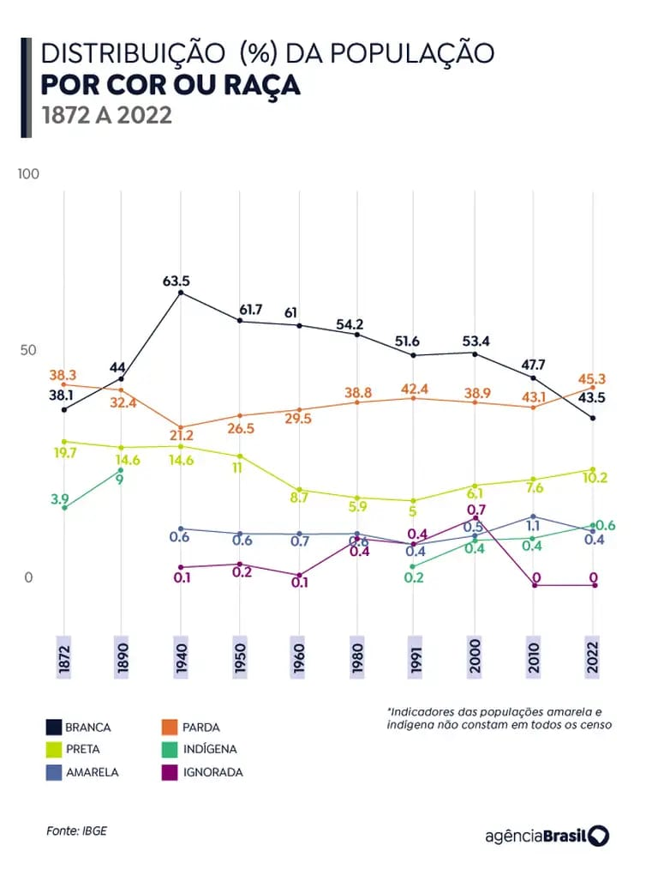

Dados e estatísticas
Apresentaremos dados referentes à representatividade negra no Brasil.

O mapa de 2022 mostra a distribuição da população negra no Brasil por estado. As regiões Norte e Nordeste têm as maiores proporções de população negra, com estados como Pará, Maranhão e Bahia apresentando índices acima de 75%. No Centro-Oeste, a porcentagem é significativa, mas um pouco menor, variando de 53% a 68%. A Região Sudeste tem índices intermediários, com São Paulo em 41% e Minas Gerais em 58,6%. Já a Região Sul apresenta as menores proporções, com Santa Catarina e Rio Grande do Sul abaixo de 25%. O mapa reflete a diversidade racial do Brasil, destacando diferenças regionais que influenciam a composição étnica e cultural.

A análise da população negra no Brasil, baseada no gráfico, mostra que mais da metade dos brasileiros se identifica como negra (preta ou parda), representando 55,5% da população em 2022. Historicamente, houve uma pressão para que a população preta se identificasse como parda, refletindo o racismo estrutural. No entanto, o aumento da autoidentificação como preta a partir dos anos 1980 demonstra maior consciência racial e valorização da identidade negra, influenciada por movimentos sociais e políticas afirmativas.
Apesar das desigualdades históricas enfrentadas, o crescimento da identificação negra evidencia a resiliência e a busca por justiça social. A análise sublinha a importância de políticas de inclusão para reparar injustiças e promover igualdade, destacando a necessidade de continuar investindo na valorização da diversidade e no combate ao racismo.
Conclusão
Com a analise dos dois graficos podemos inferir que a população negra no Brasil, que representa 56% da população, ainda enfrenta significativas desigualdades devido ao racismo estrutural. Apesar de avanços, como a implementação de cotas raciais, a discriminação persiste, especialmente no acesso à educação, saúde, emprego, e também em questões como a violência policial e a sub-representação política. Os gráficos analisados evidenciam a complexidade racial do país e as disparidades regionais que reforçam essas desigualdades: enquanto as regiões Norte e Nordeste têm uma alta presença de população negra, refletindo uma rica tradição cultural e histórica afro-brasileira, a Região Sul apresenta menores índices de representatividade negra, destacando desafios específicos para a inclusão e a visibilidade dessa população.
O crescimento da autoidentificação racial, com mais brasileiros se reconhecendo como pretos, demonstra um avanço importante na valorização da identidade negra. No entanto, esses dados também sublinham a urgência de políticas públicas que não apenas reconheçam a diversidade, mas atuem de forma eficaz para promover a equidade racial. É essencial investir em educação inclusiva, oportunidades econômicas, saúde de qualidade e no fortalecimento da representatividade política para a população negra.
A luta pela igualdade deve ser contínua, reconhecendo as especificidades regionais e os impactos históricos que ainda hoje moldam a sociedade brasileira. Somente através de um compromisso nacional para combater o racismo estrutural e valorizar a diversidade cultural do país será possível construir uma sociedade mais justa e igualitária, onde a população negra tenha acesso pleno a direitos e oportunidades.